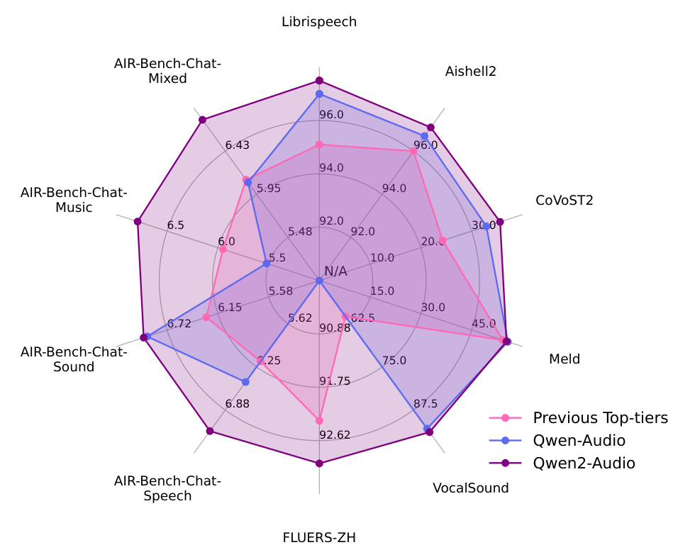
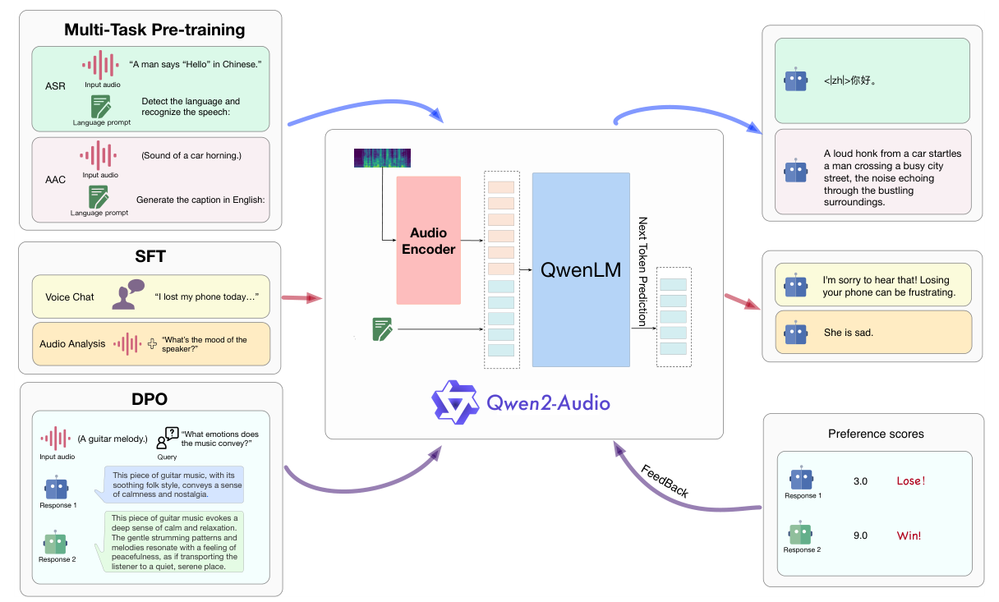
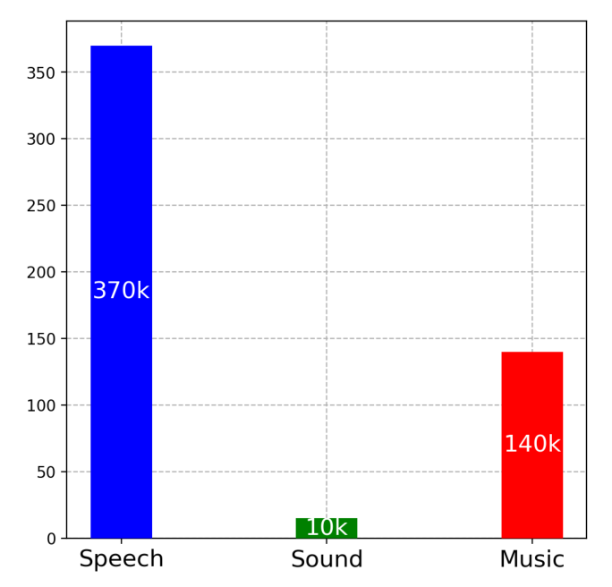
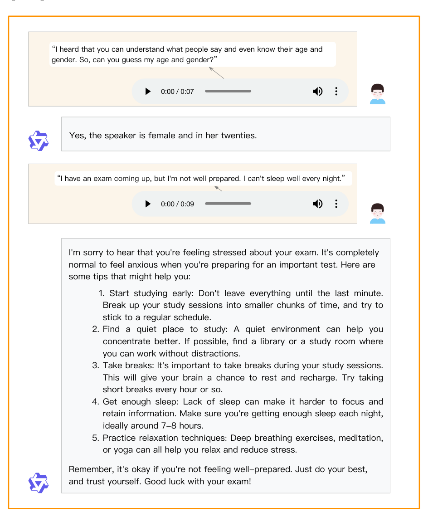
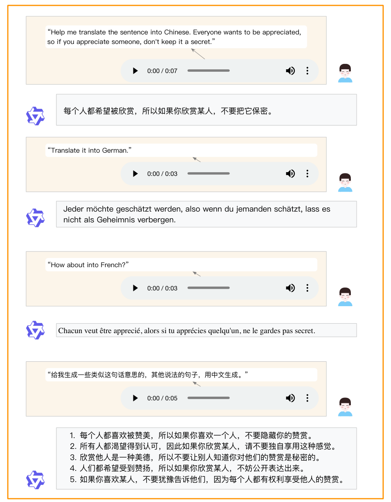
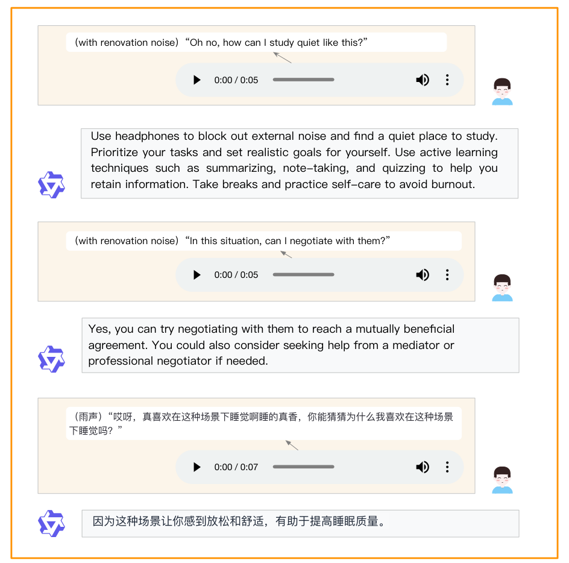
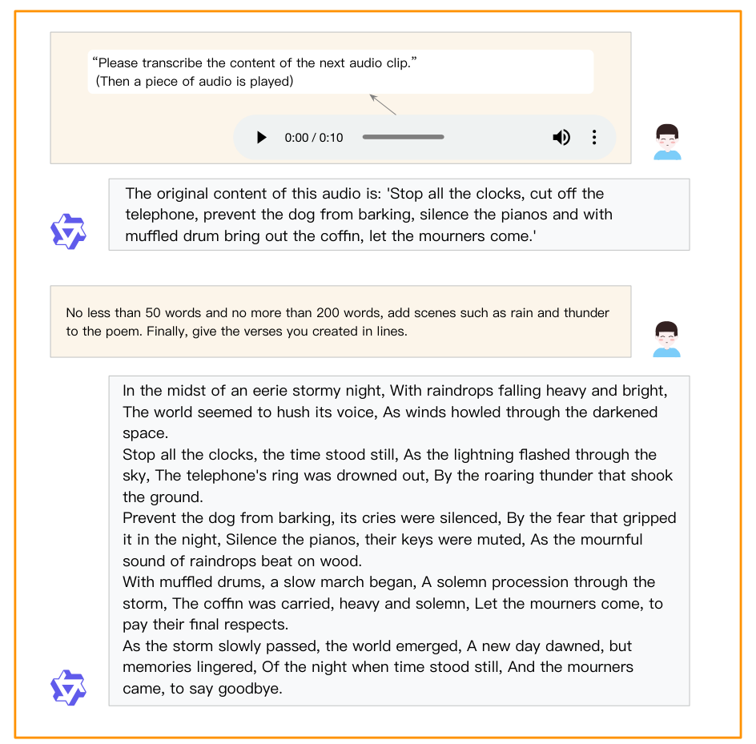
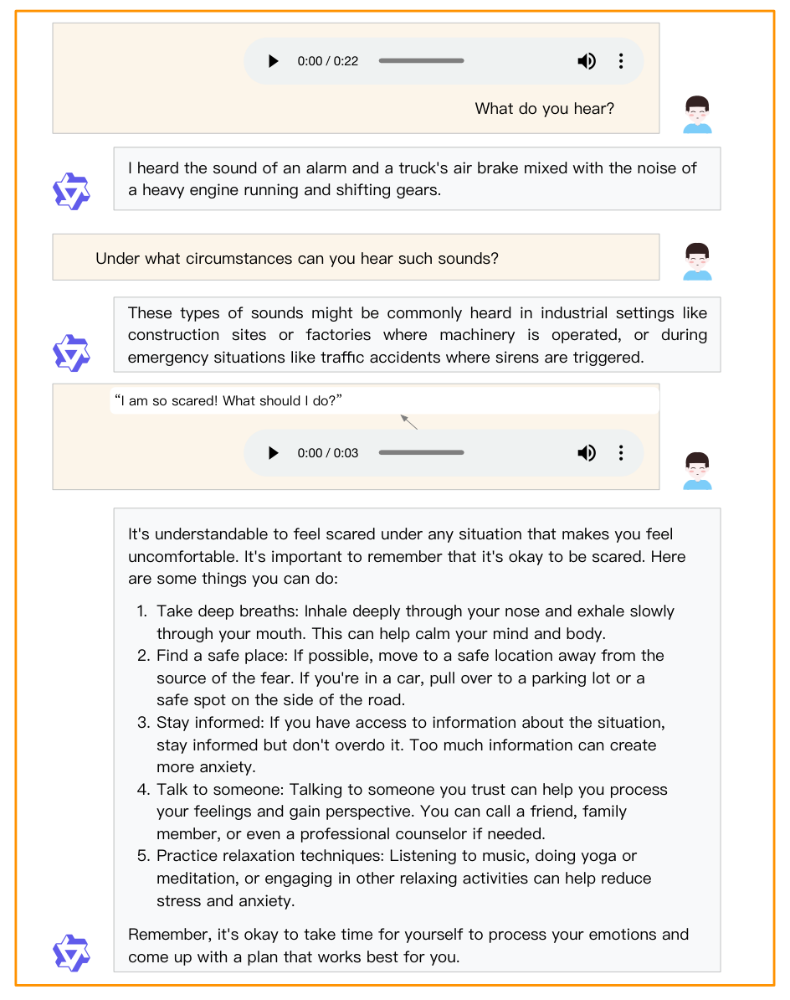
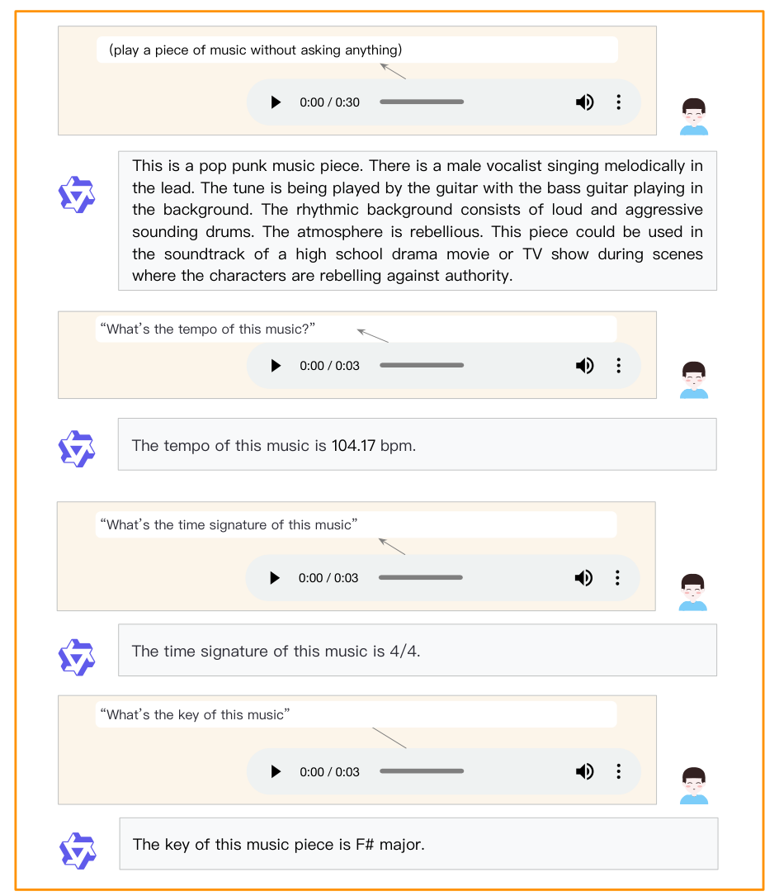
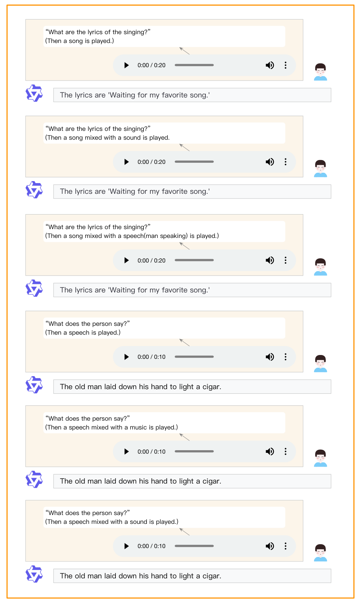

Yunfei Chu∗† Jin Xu∗† Qian Yang∗ Haojie Wei Xipin Wei Zhifang Guo Yichong Leng Yuanjun Lv Jinzheng He Junyang Lin Chang Zhou† Jingren Zhou Qwen Team, Alibaba Group Code & Demo & Models: https://github.com/QwenLM/Qwen2-Audio
摘要Abstract
We introduce the latest progress of Qwen-Audio, a large-scale audio-language model called Qwen2-Audio, which is capable of accepting various audio signal inputs and performing audio analysis or direct textual responses with regard to speech instructions. In contrast to complex hierarchical tags, we have simplified the pre-training process by utilizing natural language prompts for different data and tasks, and have further expanded the data volume. We have boosted the instruction-following capability of Qwen2-Audio and implemented two distinct audio interaction modes for voice chat and audio analysis. In the voice chat mode, users can freely engage in voice interactions with Qwen2-Audio without text input. In the audio analysis mode, users could provide audio and text instructions for analysis during the interaction. Note that we do not use any system prompts to switch between voice chat and audio analysis modes. Qwen2-Audio is capable of intelligently comprehending the content within audio and following voice commands to respond appropriately. For instance, in an audio segment that simultaneously contains sounds, multi-speaker conversations, and a voice command, Qwen2-Audio can directly understand the command and provide an interpretation and response to the audio. Additionally, DPO has optimized the model’s performance in terms of factuality and adherence to desired behavior. According to the evaluation results from AIR-Bench, Qwen2-Audio outperformed previous SOTAs, such as Gemini-1.5-pro, in tests focused on audio-centric instruction-following capabilities. Qwen2-Audio is open-sourced with the aim of fostering the advancement of the multi-modal language community.
我们介绍 Qwen-Audio 的最新进展——一个名为 Qwen2-Audio 的大规模音频-语言模型，它能够接收多种音频信号输入，并针对语音指令进行音频分析或直接给出文本回复。与复杂的层级标签不同，我们通过为不同数据和任务使用自然语言提示（prompt）简化了预训练流程，并进一步扩大了数据规模。我们提升了 Qwen2-Audio 的指令遵循能力，并实现了两种不同的音频交互模式：语音聊天与音频分析。在语音聊天模式下，用户可以在完全不输入文本的情况下与 Qwen2-Audio 自由进行语音交互。在音频分析模式下，用户可以在交互过程中提供音频和文本指令以进行分析。需要说明的是，我们并未使用任何系统提示来在语音聊天与音频分析两种模式之间切换。Qwen2-Audio 能够智能地理解音频中的内容，并遵循语音命令作出恰当的响应。例如，在一段同时包含环境声音、多说话人对话和一条语音命令的音频中，Qwen2-Audio 可以直接理解其中这条命令，并对音频给出解读与回应。此外，DPO（直接偏好优化）在事实性与符合期望行为方面优化了模型的表现。根据 AIR-Bench 的评测结果，Qwen2-Audio 在以音频为核心的指令遵循能力测试上超过了此前的 SOTA，例如 Gemini-1.5-pro。Qwen2-Audio 已开源，旨在促进多模态语言社区的发展。
1 引言Introduction
Audio serves as a crucial medium for interaction and communication among humans and other living beings, carrying rich information content. A comprehensive understanding of various forms of audio signals is paramount to achieving Artificial General Intelligence (AGI). Recently, significant advancements have been made in the development of large audio-language models (LALMs) (Chu et al., 2023; Das et al., 2024; Kong et al., 2024; Tang et al., 2024; OpenAI, 2024), demonstrating remarkable achievements in comprehending diverse speech signals, performing speech signal analysis, and complex reasoning.
音频是人类及其他生物之间交互与沟通的关键媒介，承载着丰富的信息内容。全面理解各种形式的音频信号，对实现通用人工智能（AGI）至关重要。近来，大规模音频-语言模型（LALMs）（Chu et al., 2023; Das et al., 2024; Kong et al., 2024; Tang et al., 2024; OpenAI, 2024）的发展取得了显著进展，在理解多样化语音信号、进行语音信号分析以及复杂推理方面都展现出令人瞩目的成果。
In this report, we develop Qwen2-Audio, with a primary focus on enhancing its instruction-following capabilities. Qwen2-Audio is a Large Audio-Language Model (LALM) designed to process both audio and text inputs to generate textual outputs. Compared to previous models, Qwen2-Audio significantly scales up the training dataset. To reduce the gap between pre-training and post-training stages, we simplify the ∗Equal contribution, †Corresponding author Librispeech AIR-Bench-ChatMixed
本报告开发了 Qwen2-Audio，重点提升其指令遵循能力。Qwen2-Audio 是一个大型音频-语言模型（LALM），可处理音频与文本输入并生成文本输出。与之前的模型相比，Qwen2-Audio 大幅扩展了训练数据规模。为缩小预训练与后训练阶段的差距，我们简化了（脚注：∗Equal contribution，†Corresponding author；图内标签：Librispeech / AIR-Bench-Chat / Mixed。）
96.0 6.43 94.0 5.95AIR-Bench-ChatMusic92.0 6.5 5.48 6.0 5.5N/A5.58 6.15 5.62 6.72 90.88AIR-Bench-Chat-6.25Sound91.75 6.88 92.62AIR-Bench-ChatSpeech FLUERS-ZH Aishell296.0 94.0CoVoST230.0 92.0 20.0 10.0 15.0 30.0 45.0 62.5Meld75.0 87.5Previous Top-tiers Qwen-Audio Qwen2-Audio VocalSound
（图 1 图例：Previous Top-tiers / Qwen-Audio / Qwen2-Audio； VocalSound。）

图Figure 1: Performance of Qwen2-Audio, Qwen-Audio and previous top-tiers from LALMs such as SpeechT5 (Ao et al., 2021), SpeechNet (Chen et al., 2021), SpeechLLaMA (Wu et al., 2023a), SALMONN (Tang et al., 2024), Whisper (Radford et al., 2023) Pengi (Deshmukh et al., 2023), and SpeechVerse (Das et al., 2024). We demonstrate the test set results across the 10 datasets covering Automatic Speech Recognition (ASR), Speech-to-Text Translation (S2TT), Speech Emotion Recognition (SER), Vocal Sound Classification (VSC), and instruction-following benchmark (Yang et al., 2024). The results of ASR datasets, such as Librispeech and Aishell2 refer to 1 - WER%. The results of CoVoST2 is the average BLEU score of seven translation directions (en-de, de-en, en-zh, zh-en, es-en, fr-en and it-en). The results of the AIR-Bench chat benchmark encompass four dimensions: speech, sound, music, and mixed. Scores for each dimension are automatically assessed by GPT-4, with values ranging from 0 to 10. Qwen2-Audio achieves remarkable performance without requiring any task-specific fine-tuning, surpassing its counterparts.
Figure 1：Qwen2-Audio、Qwen-Audio 以及此前的顶级 LALM（如 SpeechT5 (Ao et al., 2021)、SpeechNet (Chen et al., 2021)、SpeechLLaMA (Wu et al., 2023a)、SALMONN (Tang et al., 2024)、Whisper (Radford et al., 2023)、Pengi (Deshmukh et al., 2023)、SpeechVerse (Das et al., 2024)）的性能对比。我们展示了覆盖自动语音识别（ASR）、语音到文本翻译（S2TT）、语音情感识别（SER）、人声分类（VSC）以及指令遵循基准（Yang et al., 2024）的 10 个测试集结果。Librispeech、Aishell2 等 ASR 数据集的结果为 1 - WER%。CoVoST2 的结果是七个翻译方向（en-de、de-en、en-zh、zh-en、es-en、fr-en、it-en）的平均 BLEU 分数。AIR-Bench chat 基准的结果涵盖四个维度：语音（speech）、声音（sound）、音乐（music）与混合（mixed）。每个维度的分数由 GPT-4 自动评估，取值范围为 0 到 10。Qwen2-Audio 在不要求任何任务特定微调的情况下取得了出色的表现，超过了同类模型。
pre-training process by directly using natural language prompts for various data and tasks, as illustrated in figure 2. Following the practices in Large Language Models (LLMs) (OpenAI, 2023; Qwen, 2023), we further conduct instruction tuning and direct preference optimization to align the model’s outputs with human preferences.
……预训练流程改为直接对各类数据与任务使用自然语言提示，如 Figure 2 所示。沿用大语言模型（LLM）中的做法（OpenAI, 2023; Qwen, 2023），我们进一步进行了指令微调与直接偏好优化（DPO），使模型输出与人类偏好对齐。
Qwen2-Audio operates in two distinct modes: Audio Analysis and Voice Chat. These two modes are differentiated by their functionality, but there is no need for users to distinguish between them during use. In the audio analysis mode, users can leverage Qwen2-Audio to analyze a diverse range of audio types, including speech, sound, music, or various mixed audio forms. Commands can be issued either through audio or text, and Qwen2-Audio will autonomously discern the command segments within the audio. Conversely, in voice chat mode, users can interact with Qwen2-Audio as if it were a conversational agent, engaging in unrestricted dialogue. Audio interaction is available, and users can switch to text interaction at any moment they choose. For instance, if a user inputs an audio clip where the initial part is the sound of typing on a keyboard, followed by the user asking "What is this sound?" in spoken language, Qwen2-Audio is expected to respond directly with "This is the sound of a keyboard."
Qwen2-Audio 工作在两种不同的模式下：音频分析（Audio Analysis）与语音聊天（Voice Chat）。这两种模式在功能上有所区分，但用户在使用过程中无需去区分它们。在音频分析模式下，用户可以利用 Qwen2-Audio 分析多种多样的音频类型，包括语音、声音、音乐，或各种混合音频形式。命令可以通过音频或文本发出，Qwen2-Audio 会自主辨别音频中的命令片段。相反，在语音聊天模式下，用户可以将 Qwen2-Audio 当作一个对话智能体，进行不受限的对话。语音交互可用，用户也可以选择随时切换到文本交互。例如，如果用户输入一段音频，其开头部分是敲击键盘的声音，随后用户用口语问「这是什么声音？」，我们期望 Qwen2-Audio 直接回答「这是键盘的声音」。
As shown in Figure 1, extensive evaluation demonstrates that Qwen2-Audio, without any task-specific fine-tuning, outperforms previous LALMs across a diverse range of tasks. Among them, Qwen2-Audio Multi-Task Pre-training “A man says “Hello” in Chinese.”
如 Figure 1 所示，大量评测表明，Qwen2-Audio 在不做任何任务特定微调的情况下，于多种任务上超过了以往的 LALM。其中，Qwen2-Audio 的多任务预训练……（此处为 Figure 2 内的示例文字「A man says 'Hello' in Chinese.」，意为「一个男人用中文说'你好'」）。
Input audio ASR Detect the language and recognize the speech:
（Figure 2 图内文字）输入音频；ASR（任务）；「检测语言并识别语音」。
Language prompt (Sound of a car horning.)
（Figure 2 图内文字）语言提示；（Sound of a car horning. 汽车鸣笛声。）
Input audio AAC Generate the caption in English:
（Figure 2 图内文字）输入音频；AAC（音频描述任务）；「用英文生成描述」。
Language prompt Audio Encoder SFT Voice Chat “I lost my phone today…”
（Figure 2 图内文字）语言提示；音频编码器；SFT；语音聊天；「我今天把手机丢了……」
“What’s the mood of the speaker?”
「说话人的情绪如何？」
Audio Analysis DPO “What emotions does the music convey?” (A guitar melody.)
音频分析；DPO；「这段音乐传达了什么情绪？」（一段吉他旋律。）
Query Input audio This piece of guitar music, with its soothing folk style, conveys a sense of calmness and nostalgia.
查询；输入音频；这段吉他曲以其舒缓的民谣风格，传达出一种平静与怀旧之感。
Response 1 This piece of guitar music evokes a deep sense of calm and relaxation.
（示例回答 1：这段吉他音乐唤起深深的平静与放松感。）
The gentle strumming patterns and melodies resonate with a feeling of peacefulness, as if transporting the listener to a quiet, serene place.
轻柔的扫弦节奏与旋律唤起一种安宁的感觉，仿佛把听者带到一处静谧之地。
Response 2 <|zh|>你好。 A loud honk from a car startles a man crossing a busy city street, the noise echoing through the bustling surroundings.
（示例回答 2：<|zh|>你好。一声汽车鸣笛惊到了正穿过繁忙城市街道的男子，噪声在熙攘环境中回荡。）
Next Token Prediction QwenLM I'm sorry to hear that! Losing your phone can be frustrating.
（Figure 2 训练信号）下一个 token 预测（Next Token Prediction）；QwenLM；（回答示例：）听到这个消息我很难过！丢了手机确实很让人沮丧。
She is sad.
（Figure 2 中标注回答的示例：）她很难过。
Qwen2-Audio Preference scores FeedBack Lose！
（图 1 标签：Qwen2-Audio 偏好打分（Preference scores）；反馈示例「Lose! 3.0 / Win! 9.0」，Response 1。）
3.0Response 19.0Win!
（图 1 标签：Qwen2-Audio 偏好打分（Preference scores）；反馈示例「Lose! 3.0 / Win! 9.0」，Response 1。）
Response 2
（图 1 标签：Response 2。）

图Figure 2: The overview of three-stage training process of Qwen2-Audio.
Figure 2：Qwen2-Audio 三阶段训练流程概览。
achieves state-of-the-art performance on the test set of Aishell2, FLUERS-zh, VocalSound and AIR-Bench chat benchmark.
……在 Aishell2、FLUERS-zh、VocalSound 以及 AIR-Bench chat 基准的测试集上取得了 SOTA 的表现。
2 方法：模型架构Methodology Model Architecture
The training process of Qwen2-Audio is depicted in Figure 2, which contains an audio encoder and a large language model. Given the paired data (a, x), where the a and x denote the audio sequences and text sequences, the training objective is to maximize the next text token probability as
Qwen2-Audio 的训练流程如图 2 所示，模型包含一个音频编码器和一个大语言模型。给定成对数据 (a, x)，其中 a 和 x 分别表示音频序列和文本序列，训练目标是最大化下一个文本 token 的概率，如下式：
Pθ(xt|x<t, Encoderϕ(a)), (1)conditioning on audio representations and previous text sequences x<t, where θ and ϕ denote the trainable parameters of the LLM and audio encoder respectively.
即：以音频表示和此前的文本序列 x<t 为条件，其中 θ 和 ϕ 分别表示大语言模型与音频编码器的可训练参数。
Different from Qwen-Audio, the initialization of the audio encoder of Qwen2-Audio is based on the Whisperlarge-v3 model (Radford et al., 2023). To preprocess the audio data, we resamples it to a frequency of 16kHz and converts the raw waveform into 128-channel mel-spectrogram using a window size of 25ms and a hop size of 10ms. Additionally, a pooling layer with a stride of two is incorporated to reduce the length of the audio representation. As a result, each frame of the encoder output approximately corresponds to a 40ms segment of the original audio signal. Qwen2-Audio still incorporates the large language model Qwen-7B (Bai et al., 2023) as its foundational component. The total parameters of Qwen2-Audio is 8.2B parameters.
与 Qwen-Audio 不同，Qwen2-Audio 的音频编码器初始化基于 Whisper-large-v3 模型（Radford et al., 2023）。为了预处理音频数据，我们将其重采样到 16kHz 的频率，并使用 25ms 的窗长与 10ms 的帧移把原始波形转换成 128 通道的 Mel 频谱图。此外，还加入了一个步长为 2 的池化层，以缩短音频表示的长度。因此，编码器输出的每一帧大致对应原始音频信号中 40ms 的片段。Qwen2-Audio 仍然采用大语言模型 Qwen-7B（Bai et al., 2023）作为其基础组件。Qwen2-Audio 的总参数量为 8.2B。
预训练Pre-training
At the pre-training stage, we replace the hierarchical tags (Chu et al., 2023) with the natural language prompts. As shown in Figure 2. We find that using language prompts can improve better generalization ability and better instruction following ability.
在预训练阶段，我们用自然语言提示替换了层级标签（Chu et al., 2023）。如 Figure 2 所示。我们发现，使用自然语言提示可以带来更好的泛化能力与更好的指令遵循能力。
监督微调Supervised Fine-tuning
The thorough pretraining of Qwen2-Audio has equipped the model with a comprehensive understanding of audio content. Building upon this, we employ instruction-based fine-tuning
Qwen2-Audio 的充分预训练使模型具备了对音频内容的全面理解。在此基础上，我们采用基于指令的微调技术……

图Figure 3: Statistics (hours) of pre-training dataset.
Figure 3：预训练数据集的统计（小时数）。
techniques to improve the ability of the model to align with human intent, resulting in an interactive chat model. Our prelimilary study emphasizes the critical influence of the quality and complexity of SFT data on the model’s performance. Accordingly, a meticulously curated set of high-quality SFT data was collected, with rigorous quality control procedures implemented.
……来提升模型对齐人类意图的能力，最终得到一个可交互的聊天模型。我们的初步研究强调了 SFT 数据的质量与复杂度对模型表现的关键影响。相应地，我们收集了一套精心策划的高质量 SFT 数据，并实施了严格的质量控制流程。
We consider two distinct modes for human interactions:
我们考虑了两种不同的人机交互模式：
• Audio Analysis: In the audio analysis mode, users are afforded the flexibility to have Qwen2-Audio analyze a diverse array of audio. User instructions can be given either through audio or text.
• 音频分析：在音频分析模式下，用户可以灵活地让 Qwen2-Audio 分析多种多样的音频。用户指令既可以通过音频也可以通过文本给出。
This mode is often used for offline analysis of audio files.
这种模式常用于对音频文件进行离线分析。
• Voice Chat: In the voice chat mode, users are encouraged to engage in voice conversations with Qwen2-Audio, asking a wide range of questions. Please feel free to consider it your voice chat assistant.
• 语音聊天：在语音聊天模式下，鼓励用户与 Qwen2-Audio 进行语音对话，提出各种各样的问题。你完全可以把它当作自己的语音聊天助手。
This mode is often used for online interaction with LALMs.
这种模式常用于与 LALM 进行在线交互。
For consistency and model uniformity, both interaction modes were jointly trained, thus users will not experience mode differentiation during use, nor is it necessary to switch between different modes using separate system prompts. The two modes are seamlessly integrated in actual use.
为保持一致性与模型的统一性，两种交互模式被联合训练，因此用户在使用过程中不会感受到模式之分，也无需通过各自的系统提示在不同模式之间切换。两种模式在实际使用中是无缝融合的。
直接偏好优化Direct Preference Optimization
We employ DPO (Rafailov et al., 2024) to further optimize models to follow human preferences. By obtaining the dataset D with the triplet data (x, yw, yl), where x is the input sequence with input audio, and yw and yl are the human-annotated good and bad responses respectively, we optimize the model Pθ as follows: log σ β log Pθ(yw | x)
我们采用 DPO（Rafailov et al., 2024）来进一步优化模型，使其遵循人类偏好。给定由三元组数据 (x, yw, yl) 构成的数据集 D，其中 x 是包含输入音频的输入序列，yw 和 yl 分别是人工标注的好回答与坏回答，我们按下式优化模型 Pθ：log σ β log Pθ(yw | x)……（此处原文公式被页内排版截断，完整形式见下方公式 (2)）。
LDPO(Pθ; Pref) = −E(x,yw,yl)∼D, (2)Pref(yw | x) −β log Pθ(yl | x)Pref(yl | x)where Pref denotes the reference model initialized with Pθ, σ represents sigmoid function and β is a hyperparameter. Figure 2 illustrates the three-stage training process of Qwen2-Audio.
其中 Pref 表示以 Pθ 初始化的参考模型，σ 表示 sigmoid 函数，β 是一个超参数。Figure 2 展示了 Qwen2-Audio 的三阶段训练流程。
1https://github.com/mjpost/sacrebleu
（脚注）1https://github.com/mjpost/sacrebleu
Table 1: Summary of Evaluation Benchmarks for Qwen2-Audio.
Table 1：Qwen2-Audio 评测基准汇总。
Task Description Dataset Split Metric Fleurs (Conneau et al., 2022) dev | test WER Aishell2 (Du et al., 2018) test Librispeech (Panayotov et al., 2015) dev | test Common Voice (Ardila et al., 2020) dev | test ASR Automatic Speech Recognition S2TT Speech-to-Text Translation CoVoST2 (Wang et al., 2020) test BLEU 1 (Papineni et al., 2002) SER Speech Emotion Recognition Meld (Poria et al., 2019) test ACC VSC Vocal Sound Classification VocalSound (Gong et al., 2022) test ACC Fisher (Cieri et al., 2004) SpokenWOZ (Si et al., 2023) IEMOCAP (Si et al., 2023) Common voice (Ardila et al., 2020) Chat-Benchmark-Speech AIR-Bench (Yang et al., 2024) dev | test GPT-4 Eval Chat-Benchmark-Sound Clotho (Drossos et al., 2020) dev | test GPT-4 Eval Chat-Benchmark-Music MusicCaps (Agostinelli et al., 2023) dev | test GPT-4 Eval Chat-Benchmark-Mixed-Audio Common voice (Ardila et al., 2020) AudioCaps (Kim et al., 2019) MusicCaps (Agostinelli et al., 2023) dev | test GPT-4 Eval
（评测配置表：任务 × 数据集 × 划分 × 指标——ASR（自动语音识别）：Fleurs（Conneau et al., 2022）dev/test、Aishell2（Du et al., 2018）test、Librispeech（Panayotov et al., 2015）dev/test、Common Voice（Ardila et al., 2020）dev/test，指标 WER；S2TT（语音到文本翻译）：CoVoST2（Wang et al., 2020）test，指标 BLEU（Papineni et al., 2002，式 1）；SER（语音情感识别）：Meld（Poria et al., 2019）test，指标 ACC；VSC（声音分类）：VocalSound（Gong et al., 2022）test，指标 ACC；另有 Fisher（Cieri et al., 2004）、SpokenWOZ（Si et al., 2023）、IEMOCAP（Si et al., 2023）、Common voice（Ardila et al., 2020）；Chat-Benchmark-Speech/Sound/Music/Mixed-Audio：AIR-Bench（Yang et al., 2024）、Clotho（Drossos et al., 2020）、MusicCaps（Agostinelli et al., 2023）、AudioCaps（Kim et al., 2019）、Common voice（Ardila et al., 2020）等 dev/test，GPT-4 Eval。）
3 实验Experiments
3.1 评测Evaluation
In practice, we have found that many previous test datasets are highly limited and cannot adequately reflect performance in real-world scenarios, such as some SLU (Spoken Language Understanding) and SER (Speech Emotion Recognition) datasets. Therefore, we mainly evaluated performance directly on AIR-Bench. We discovered that the scores from AIR-Bench align more closely with the actual user interaction experience. Meanwhile, in order to assess the universal understanding capabilities of Qwen2-Audio, as shown in Table 1, we still perform a comprehensive evaluation that encompasses various tasks, namely Automatic Speech Recognition (ASR), Speech-to-Text Translation (S2TT), Speech Emotion Recognition (SER), Vocal Sound Classification (VSC). The evaluation is conducted across 13 datasets. The evaluation datasets are rigorously excluded from the training data to avoid data leakage. The models we compare include open-source models and callable APIs, such as Gemini.
在实践中我们发现，许多以往的测试数据集局限性很大，无法充分反映真实场景下的表现，例如一些 SLU（口语理解）和 SER（语音情感识别）数据集。因此，我们主要在 AIR-Bench 上直接评测表现。我们发现，AIR-Bench 的分数与实际的用户交互体验更为吻合。同时，为了评估 Qwen2-Audio 的通用理解能力，如 Table 1 所示，我们仍进行了一套涵盖多种任务的综合评测，即自动语音识别（ASR）、语音到文本翻译（S2TT）、语音情感识别（SER）和人声分类（VSC）。评测在 13 个数据集上进行。评测数据集被严格地从训练数据中排除，以避免数据泄漏。我们对比的模型包括开源模型和可调用的 API，例如 Gemini。
3.2 主要结果Main Results
In this section, we present a comprehensive evaluation of the Qwen2-Audio model, assessing its performance across various tasks without any task-specific fine-tuning. We begin by examining its English Automatic Speech Recognition (ASR) results, as depicted in Table 2, where Qwen2-Audio exhibits superior performance compared to previous multi-task learning models. Specifically, it achieves a 1.6% and 3.6% WER on the librispeech test-clean and test-other datasets, respectively. Compared with Whisper-large-v3 on Fleurs zh subset, we achieve better results than Whisper-large-v3. One point to note is that Qwen2-Audio is not evaluated in a zero-shot manner on the Common Voice 15 dataset, whereas Whisper’s results are obtained in a zero-shot fashion. However, on the Fleurs dataset, both Qwen2-Audio and Whisper are evaluated in a zero-shot manner. Furthermore, we evaluate Qwen2-Audio’s speech translation performance on the CoVoST2 dataset. The results reveal that Qwen2-Audio outperforms the baselines by a substantial margin across all seven translation directions. For sound, we analyze the performance of Qwen2-Audio on SER, and VSC, as summarized in Table 2. Across these tasks, Qwen2-Audio consistently outperforms the baselines by a significant margin.
本节我们对 Qwen2-Audio 模型给出全面评测，在不做任何任务特定微调的情况下评估其在各项任务上的表现。我们首先考察其英语自动语音识别（ASR）结果，如 Table 2 所示，Qwen2-Audio 相比以往的多任务学习模型展现出更优的表现。具体而言，它在 Librispeech test-clean 和 test-other 数据集上分别取得了 1.6% 与 3.6% 的 WER。与 Whisper-large-v3 在 Fleurs 中文子集上相比，我们取得了比 Whisper-large-v3 更好的结果。需要注意的一点是，Qwen2-Audio 在 Common Voice 15 数据集上并非以零样本方式评测，而 Whisper 的结果是以零样本方式取得的。不过，在 Fleurs 数据集上，Qwen2-Audio 与 Whisper 都是在零样本方式下评测的。此外，我们在 CoVoST2 数据集上评估了 Qwen2-Audio 的语音翻译表现。结果显示，Qwen2-Audio 在全部七个翻译方向上以显著优势超过基线。对于声音方面，我们分析了 Qwen2-Audio 在 SER 与 VSC 上的表现，汇总于 Table 2。在这些任务上，Qwen2-Audio 始终以明显优势超过基线。
Lastly, to objectively evaluate the chat capabilities of Qwen2-Audio, we measured its performance on the
最后，为客观评估 Qwen2-Audio 的聊天能力，我们在 AIR-Bench（Yang et al., 2024）的聊天基准上测量了其表现。
Table 2: The results of Automatic Speech Recognition (ASR), Speech-to-Text Translation (S2TT), Speech Emotion Recognition (SER), Vocal Sound Classification (VSC), and AIR-Bench chat benchmark. Note that for Qwen2-Audio, the results for Fleurs are zero-shot, whereas the results for Common Voice are not zero-shot.
Table 2：自动语音识别（ASR）、语音到文本翻译（S2TT）、语音情感识别（SER）、人声分类（VSC）以及 AIR-Bench 聊天基准的结果。注意：对 Qwen2-Audio 而言，Fleurs 的结果是零样本的，而 Common Voice 的结果不是零样本的。
Task Dataset Model Performance Metrics Results SpeechT5 (Ao et al., 2021)
（Table 2 表格正文抽取残留，含各模型与任务的数值散块：）任务、数据集、模型、性能指标与结果；SpeechT5 (Ao et al., 2021)、SpeechNet (Chen et al., 2021)（数值如 30.7）；SLM-FT (Wang et al., 2023b)（2.6 | 5.0）；SALMONN (Tang et al., 2024)（2.1 | 4.9）；SpeechVerse (Das et al., 2024)（2.1 | 4.4）；Librispeech dev-clean | dev-other | test-clean | test-other；Common Voice 15 en | zh | yue | fr；Whisper-large-v3 (Radford et al., 2023)；ASR Fleurs zh：Whisper-large-v3 (Radford et al., 2023) 7.7、7.5；MMSpeech-base (Zhou et al., 2022)、Paraformer-large (Gao et al., 2023)（2.9）；Aishell2 Mic | iOS | Android；SALMONN (18.6 | 33.1)；SpeechLLaMA (Wu et al., 2023a)（27.1 | 12.3）；BLSP (Wang et al., 2023a)（14.1）；CoVoST2 en-de | de-en | en-zh | zh-en；S2TT BLEU ↑：SpeechLLaMA；CoVoST2 es-en | fr-en | it-en；SER Meld：WavLM-large (Chen et al., 2022) ACC ↑ 0.542、0.557、0.553；CLAP (Elizalde et al., 2022) 0.4945；Pengi (Deshmukh et al., 2023) 0.6035、0.9289、0.9392；VSC VocalSound ACC ↑：SALMONN、BLSP、Pandagpt (Su et al., 2023)、Macaw-LLM (Lyu et al., 2023)、SpeechGPT (Zhang et al., 2023)、Next-gpt (Wu et al., 2023b)、Gemini-1.5-pro (Reid et al., 2024)；聊天基准 Speech | Sound | Music | Mixed-Audio：AIR-Bench（GPT-4 打分 ↑）。
2.1 | 5.5 | 2.4 | 5.8SpeechNet (Chen et al., 2021)- | - | 30.7 | -SLM-FT (Wang et al., 2023b)- | - | 2.6 | 5.0SALMONN (Tang et al., 2024)- | - | 2.1 | 4.9SpeechVerse (Das et al., 2024)- | - | 2.1 | 4.4Qwen-Audio (Chu et al., 2023)1.8 | 4.0 | 2.0 | 4.2Qwen2-Audio1.3 | 3.4 | 1.6 | 3.6Librispeech dev-clean | dev-other | test-clean | test-other WER ↓ Common Voice 15 en | zh | yue | fr Whisper-large-v3 (Radford et al., 2023) WER ↓
（表头：Librispeech dev-clean/dev-other/test-clean/test-other WER↓；Common Voice 15（en/zh/yue/fr 等 15 种语言）；Whisper-large-v3（Radford et al., 2023）的 WER↓。）
9.3 | 12.8 | 10.9 | 10.8Qwen2-Audio8.6 | 6.9 | 5.9 | 9.6ASR Fleurs zh Whisper-large-v3 (Radford et al., 2023) WER ↓
（表格行：ASR × Fleurs zh——Whisper-large-v3（Radford et al., 2023）WER↓ 7.7；Qwen2-Audio 7.5；MMSpeech-base（Zhou et al., 2022）。）
7.7Qwen2-Audio7.5MMSpeech-base (Zhou et al., 2022)4.5 | 3.9 | 4.0Paraformer-large (Gao et al., 2023)- | 2.9 | -Qwen-Audio (Chu et al., 2023)3.3 | 3.1 | 3.3Qwen2-Audio3.0 | 3.0 | 2.9Aishell2 Mic | iOS | Android WER ↓ SALMONN (Tang et al., 2024)
（表头：Aishell2 的 Mic/iOS/Android 三通道 WER↓；SALMONN（Tang et al., 2024）。）
18.6 | - | 33.1 | -SpeechLLaMA (Wu et al., 2023a)- | 27.1 | - | 12.3BLSP (Wang et al., 2023a)14.1 | - | - | -Qwen-Audio (Chu et al., 2023)25.1 | 33.9 | 41.5 | 15.7Qwen2-Audio29.9 | 35.2 | 45.2 | 24.4CoVoST2 en-de | de-en | en-zh | zh-en S2TT BLEU ↑ SpeechLLaMA (Wu et al., 2023a) BLEU ↑
（Table 2 表格正文抽取残留，含各模型与任务的数值散块：）任务、数据集、模型、性能指标与结果；SpeechT5 (Ao et al., 2021)、SpeechNet (Chen et al., 2021)（数值如 30.7）；SLM-FT (Wang et al., 2023b)（2.6 | 5.0）；SALMONN (Tang et al., 2024)（2.1 | 4.9）；SpeechVerse (Das et al., 2024)（2.1 | 4.4）；Librispeech dev-clean | dev-other | test-clean | test-other；Common Voice 15 en | zh | yue | fr；Whisper-large-v3 (Radford et al., 2023)；ASR Fleurs zh：Whisper-large-v3 (Radford et al., 2023) 7.7、7.5；MMSpeech-base (Zhou et al., 2022)、Paraformer-large (Gao et al., 2023)（2.9）；Aishell2 Mic | iOS | Android；SALMONN (18.6 | 33.1)；SpeechLLaMA (Wu et al., 2023a)（27.1 | 12.3）；BLSP (Wang et al., 2023a)（14.1）；CoVoST2 en-de | de-en | en-zh | zh-en；S2TT BLEU ↑：SpeechLLaMA；CoVoST2 es-en | fr-en | it-en；SER Meld：WavLM-large (Chen et al., 2022) ACC ↑ 0.542、0.557、0.553；CLAP (Elizalde et al., 2022) 0.4945；Pengi (Deshmukh et al., 2023) 0.6035、0.9289、0.9392；VSC VocalSound ACC ↑：SALMONN、BLSP、Pandagpt (Su et al., 2023)、Macaw-LLM (Lyu et al., 2023)、SpeechGPT (Zhang et al., 2023)、Next-gpt (Wu et al., 2023b)、Gemini-1.5-pro (Reid et al., 2024)；聊天基准 Speech | Sound | Music | Mixed-Audio：AIR-Bench（GPT-4 打分 ↑）。
27.9 | 25.2 | 25.9Qwen-Audio (Chu et al., 2023)39.7 | 38.5 | 36.0Qwen2-Audio40.0 | 38.5 | 36.3CoVoST2 es-en | fr-en | it-en | SER Meld WavLM-large (Chen et al., 2022) ACC ↑
（表：CoVoST2 es-en/fr-en/it-en；SER Meld ACC↑——WavLM-large（Chen et al., 2022）0.542；Qwen-Audio（Chu et al., 2023）0.557；Qwen2-Audio 0.553；CLAP（Elizalde et al., 2022）0.4945；Pengi（Deshmukh et al., 2023）0.6035；Qwen-Audio 0.9289；Qwen2-Audio 0.9392；VSC VocalSound ACC↑：SALMONN（Tang et al., 2024）、BLSP（Wang et al., 2023a）、Pandagpt（Su et al., 2023）、Macaw-LLM（Lyu et al., 2023）、SpeechGPT（Zhang et al., 2023）、Next-gpt（Wu et al., 2023b）、Qwen-Audio（Chu et al., 2023）、Gemini-1.5-pro（Reid et al., 2024）、Qwen2-Audio；Chat Benchmark：Speech/Sound/Music/Mixed-Audio，AIR-Bench（Yang et al., 2024）。）
0.542Qwen-Audio (Chu et al., 2023)0.557Qwen2-Audio0.553CLAP (Elizalde et al., 2022)0.4945Pengi (Deshmukh et al., 2023)0.6035Qwen-Audio (Chu et al., 2023)0.9289Qwen2-Audio0.9392VSC VocalSound ACC ↑ SALMONN (Tang et al., 2024) BLSP (Wang et al., 2023a) Pandagpt (Su et al., 2023) Macaw-LLM (Lyu et al., 2023) SpeechGPT (Zhang et al., 2023) Next-gpt (Wu et al., 2023b) Qwen-Audio (Chu et al., 2023) Gemini-1.5-pro (Reid et al., 2024) Qwen2-Audio Chat Benchmark Speech | Sound | Music | Mixed-Audio AIR-Bench (Yang et al., 2024)
（表：CoVoST2 es-en/fr-en/it-en；SER Meld ACC↑——WavLM-large（Chen et al., 2022）0.542；Qwen-Audio（Chu et al., 2023）0.557；Qwen2-Audio 0.553；CLAP（Elizalde et al., 2022）0.4945；Pengi（Deshmukh et al., 2023）0.6035；Qwen-Audio 0.9289；Qwen2-Audio 0.9392；VSC VocalSound ACC↑：SALMONN（Tang et al., 2024）、BLSP（Wang et al., 2023a）、Pandagpt（Su et al., 2023）、Macaw-LLM（Lyu et al., 2023）、SpeechGPT（Zhang et al., 2023）、Next-gpt（Wu et al., 2023b）、Qwen-Audio（Chu et al., 2023）、Gemini-1.5-pro（Reid et al., 2024）、Qwen2-Audio；Chat Benchmark：Speech/Sound/Music/Mixed-Audio，AIR-Bench（Yang et al., 2024）。）
6.16 | 6.28 | 5.95 | 6.08 6.17 | 5.55 | 5.08 | 5.33 3.58 | 5.46 | 5.06 | 4.25 0.97 | 1.01 | 0.91 | 1.01 1.57 | 0.95 | 0.95 | 4.13 3.86 | 4.76 | 4.18 | 4.13 6.47 | 6.95 | 5.52 | 6.08 6.97 | 5.49 | 5.06 | 5.27 7.18 | 6.99 | 6.79 | 6.77GPT-4 ↑ chat benchmark of the AIR-Bench (Yang et al., 2024). Note that since Gemini-1.5 (Reid et al., 2024)2 cannot correctly return some test samples due to its SAFETY reasons during testing, the number of samples of Gemini1.5 on AIR-Bench-chat has been reduced by about 1/5. As shown in table 2, Qwen2-Audio demonstrates state-of-the-art (SOTA) instruction-following capabilities across speech, sound music and mixed-Audio subsets. It shows substantial improvements compared to Qwen-Audio and significantly outperforms other LALMs.
（Table 2 表格正文抽取残留，含各模型与任务的数值散块：）任务、数据集、模型、性能指标与结果；SpeechT5 (Ao et al., 2021)、SpeechNet (Chen et al., 2021)（数值如 30.7）；SLM-FT (Wang et al., 2023b)（2.6 | 5.0）；SALMONN (Tang et al., 2024)（2.1 | 4.9）；SpeechVerse (Das et al., 2024)（2.1 | 4.4）；Librispeech dev-clean | dev-other | test-clean | test-other；Common Voice 15 en | zh | yue | fr；Whisper-large-v3 (Radford et al., 2023)；ASR Fleurs zh：Whisper-large-v3 (Radford et al., 2023) 7.7、7.5；MMSpeech-base (Zhou et al., 2022)、Paraformer-large (Gao et al., 2023)（2.9）；Aishell2 Mic | iOS | Android；SALMONN (18.6 | 33.1)；SpeechLLaMA (Wu et al., 2023a)（27.1 | 12.3）；BLSP (Wang et al., 2023a)（14.1）；CoVoST2 en-de | de-en | en-zh | zh-en；S2TT BLEU ↑：SpeechLLaMA；CoVoST2 es-en | fr-en | it-en；SER Meld：WavLM-large (Chen et al., 2022) ACC ↑ 0.542、0.557、0.553；CLAP (Elizalde et al., 2022) 0.4945；Pengi (Deshmukh et al., 2023) 0.6035、0.9289、0.9392；VSC VocalSound ACC ↑：SALMONN、BLSP、Pandagpt (Su et al., 2023)、Macaw-LLM (Lyu et al., 2023)、SpeechGPT (Zhang et al., 2023)、Next-gpt (Wu et al., 2023b)、Gemini-1.5-pro (Reid et al., 2024)；聊天基准 Speech | Sound | Music | Mixed-Audio：AIR-Bench（GPT-4 打分 ↑）。请注意，由于 Gemini-1.5（Reid et al., 2024）在测试期间因安全原因无法正确返回部分测试样本（见脚注 2），Gemini-1.5 在 AIR-Bench-chat 上的样本数减少了约 1/5。如 Table 2 所示，Qwen2-Audio 在语音、声音、音乐和混合音频子集上展现出 SOTA 的指令遵循能力。相比 Qwen-Audio 它有显著提升，并且明显超过其他 LALM。
2https://console.cloud.google.com/vertex-ai/generative/multimodal/create
（脚注）2https://console.cloud.google.com/vertex-ai/generative/multimodal/create
4 案例Cases
Here, we present a part of cases to illustrate Qwen2-Audio’s audio-based interaction capabilities. For more impressive examples, please refer to https://github.com/QwenLM/Qwen2-Audio.
这里展示一部分案例，用以说明 Qwen2-Audio 基于音频的交互能力。更多令人印象深刻的示例，请参见 https://github.com/QwenLM/Qwen2-Audio。
0:00 / 0:07Yes, the speaker is female and in her twenties.
（音频示例 0:00/0:07：「是的，说话者是女性，二十多岁。」）
0:00 / 0:09“I have an exam coming up, but I'm not well prepared. I can't sleep well every night.”
（音频示例 0:00/0:09：「我马上要考试了，但准备得不太充分。」）我每天晚上都睡不好。」
“I heard that you can understand what people say and even know their age and gender. So, can you guess my age and gender?”
（用户语音：）「我听说你能听懂人们说的话，甚至能知道他们的年龄和性别。那么，你能猜猜我的年龄和性别吗？」
I'm sorry to hear that you're feeling stressed about your exam. It's completely normal to feel anxious when you're preparing for an important test. Here are some tips that might help you:
（模型回答：）很抱歉听到你因考试而感到焦虑。在准备重要考试时感到紧张是完全正常的。这里有一些可能对你有帮助的建议：
Remember, it's okay if you're not feeling well-prepared. Just do your best, and trust yourself. Good luck with your exam!
请记住，感觉自己没有充分准备好是正常的。尽你最大的努力，相信自己。祝你考试顺利！
1. Start studying early: Don't leave everything until the last minute.
1.尽早开始学习：不要把所有事情都拖到最后关头。
Break up your study sessions into smaller chunks of time, and try to stick to a regular schedule. 2. Find a quiet place to study: A quiet environment can help you concentrate better. If possible, find a library or a study room where you can work without distractions. 3. Take breaks: It's important to take breaks during your study sessions.
把学习时间切分成较小的时间段，并尽量坚持规律的日程。2.找一个安静的地方学习：安静的环境能帮助你更好地集中注意力。如果可能，找一间图书馆或自习室，在那里你可以不受干扰地学习。3.适当休息：在学习过程中安排休息非常重要。
This will give your brain a chance to rest and recharge. Try taking short breaks every hour or so. 4. Get enough sleep: Lack of sleep can make it harder to focus and retain information. Make sure you're getting enough sleep each night, ideally around 7-8 hours. 5. Practice relaxation techniques: Deep breathing exercises, meditation, or yoga can all help you relax and reduce stress.
这会让你的大脑有机会休息和恢复精力。试着每隔一小时左右短暂休息一下。4.保证充足睡眠：睡眠不足会让集中注意力和记住信息变得更困难。确保每晚获得足够睡眠，理想情况下约 7-8 小时。5.练习放松技巧：深呼吸练习、冥想或瑜伽都能帮助你放松、减轻压力。

图Figure 4: Example showing Qwen2-Audio’s capability in free chat around speech.
Figure 4：示例展示 Qwen2-Audio 围绕语音进行自由对话的能力。
5 结论Conclusion
In this paper, we present Qwen2-Audio, which builds upon Qwen-Audio’s capability to analyze various types of audio while also being endowed with voice interaction abilities. During the pre-training stage, we utilized natural language prompts for different data and tasks and have further expanded the data volume. In the SFT phase, we enhanced Qwen2-Audio’s alignment with human interaction by increasing the quantity, quality, and complexity of SFT data, thereby enabling seamless voice and text interactions. Additionally, we improved Qwen2-Audio’s response quality through the DPO stage. Objective metrics tested on diverse benchmarks demonstrate Qwen2-Audio’s proficiency in audio understanding and dialogue capabilities. The cases presented within the paper also illustrate Qwen2-Audio’s fluent and flexible voice interaction capability.
在本文中，我们提出了 Qwen2-Audio，它在 Qwen-Audio 分析多种音频类型的能力之上，又被赋予了语音交互能力。在预训练阶段，我们针对不同的数据与任务使用自然语言提示，并进一步扩大了数据规模。在 SFT 阶段，我们通过提升 SFT 数据的数量、质量与复杂度，增强了 Qwen2-Audio 与人类交互意图的对齐，从而实现无缝的语音与文本交互。此外，我们通过 DPO 阶段改善了 Qwen2-Audio 的回答质量。在多个基准上测得的客观指标展示了 Qwen2-Audio 在音频理解与对话能力上的熟练程度。文中给出的案例也展示了 Qwen2-Audio 流畅而灵活的语音交互能力。
0:00 / 0:07每个⼈都希望被欣赏，所以如果你欣赏某⼈，不要把它保密。0:00 / 0:03“Translate it into German.”
（音频示例：0:00/0:07「每个人都希望被欣赏，所以如果你欣赏某人，不要把它保密。」0:00/0:03 指令「把它翻译成德语。」）
“Help me translate the sentence into Chinese. Everyone wants to be appreciated, so if you appreciate someone, don't keep it a secret.”
（轮次重组后的示例文本：）「帮我把这个句子翻译成中文。Everyone wants to be appreciated, so if you appreciate someone, don't keep it a secret.（每个人都希望被欣赏，所以如果你欣赏某人，不要把它保密。）」
Jeder möchte geschätzt werden, also wenn du jemanden schätzt, lass es nicht als Geheimnis verbergen.
（模型输出的德语译文：）Jeder möchte geschätzt werden, also wenn du jemanden schätzt, lass es nicht als Geheimnis verbergen.（每个人都希望被欣赏，所以如果你欣赏某人，不要把它当作秘密藏起来。）
0:00 / 0:03“How about into French?”
（音频示例 0:00/0:03：「翻译成法语怎么样？」）
Chacun veut être apprecié, alors si tu apprécies quelqu'un, ne le gardes pas secret.
（模型输出的法语译文：）Chacun veut être apprecié, alors si tu apprécies quelqu'un, ne le gardes pas secret.（每个人都希望被欣赏，所以如果你欣赏某人，不要把它保密。）
0:00 / 0:05“给我⽣成⼀些类似这句话意思的，其他说法的句⼦，⽤中⽂⽣成。” 1. 每个⼈都喜欢被赞美，所以如果你喜欢⼀个⼈，不要隐藏你的赞赏。 2. 所有⼈都渴望得到认可，因此如果你欣赏某⼈，请不要独⾃享⽤这种感觉。 3. 欣赏他⼈是⼀种美德，所以不要让别⼈知道你对他们的赞赏是秘密的。 4. ⼈们都希望受到赞扬，所以如果你欣赏某⼈，不妨公开表达出来。 5. 如果你喜欢某⼈，不要犹豫告诉他们，因为每个⼈都有权利享受他⼈的赞赏。
1. "给我生成一些类似这句话意思的，其他说法的句子，用中文生成。" 1. 每个人都喜欢被赞美，所以如果你喜欢一个人，不要隐藏你的赞赏。 2. 所有人都渴望得到认可，因此如果你欣赏某人，请不要独自享用这种感觉。 3. 欣赏他人是一种美德，所以不要让别人知道你对他们的赞赏是秘密的。 4. 人们都希望受到赞扬，所以如果你欣赏某人，不妨公开表达出来。 5. 如果你喜欢某人，不要犹豫告诉他们，因为每个人都有权利享受他人的赞赏。

图Figure 5: Example showing Qwen2-Audio’s capability in free chat around speech.
Figure 5：示例展示 Qwen2-Audio 围绕语音进行自由对话的能力。
0:00 / 0:05Use headphones to block out external noise and find a quiet place to study. Prioritize your tasks and set realistic goals for yourself. Use active learning techniques such as summarizing, note-taking, and quizzing to help you retain information. Take breaks and practice self-care to avoid burnout.
（音频示例 0:00/0:05：用耳机隔绝外界噪声，找个安静的地方学习。）为任务排好优先级，为自己设定现实可行的目标。使用主动学习技巧，如总结、记笔记和自测，帮助你记住知识。适时休息并做好自我关照，以避免过度疲劳（burnout）。
0:00 / 0:05（with renovation noise）“In this situation, can I negotiate with them?”
（音频示例 0:00/0:05：（伴随装修噪声）「这种情况下，我可以和他们协商吗？」）
（with renovation noise）“Oh no, how can I study quiet like this?”
（伴随装修噪声的语音：）「天哪，这样我怎么安静学习啊？」
Yes, you can try negotiating with them to reach a mutually beneficial agreement. You could also consider seeking help from a mediator or professional negotiator if needed.
（模型回答：）可以，你可以尝试和他们协商，达成一个双方都有益的协议。如有需要，你也可以考虑寻求调解人或专业谈判者的帮助。
0:00 / 0:07因为这种场景让你感到放松和舒适，有助于提⾼睡眠质量。 （⾬声）“哎呀，真喜欢在这种场景下睡觉啊睡的真⾹，你能猜猜为什么我喜欢在这种场景 下睡觉吗？”
（音频示例 0:00/0:07：「因为这种场景让你感到放松和舒适，有助于提高睡眠质量。（雨声）哎呀，真喜欢在这种场景下睡觉啊睡的真香，你能猜猜为什么我喜欢在这种场景下睡觉吗？」）

图Figure 6: Example showing Qwen2-Audio’s capability in free chat around speech and nature sound.
Figure 6：示例展示 Qwen2-Audio 围绕语音与自然声音进行自由对话的能力。
“Please transcribe the content of the next audio clip.” (Then a piece of audio is played)
（音频示例：指令「请转写下一段音频的内容。」（随后播放一段音频）0:00/0:10，音频原文为「Stop all the clocks, cut off the telephone, prevent the dog from barking, silence the pianos and with muffled drum bring out the coffin, let the mourners come.」）
0:00 / 0:10The original content of this audio is: 'Stop all the clocks, cut off the telephone, prevent the dog from barking, silence the pianos and with muffled drum bring out the coffin, let the mourners come.'
（音频示例：指令「请转写下一段音频的内容。」（随后播放一段音频）0:00/0:10，音频原文为「Stop all the clocks, cut off the telephone, prevent the dog from barking, silence the pianos and with muffled drum bring out the coffin, let the mourners come.」）
No less than 50 words and no more than 200 words, add scenes such as rain and thunder to the poem. Finally, give the verses you created in lines.
（用户追加指令：）不少于 50 词、不超过 200 词，在诗中加入雨和雷等场景。最后，把你创作的诗句按行给出。
In the midst of an eerie stormy night, With raindrops falling heavy and bright, The world seemed to hush its voice, As winds howled through the darkened space. Stop all the clocks, the time stood still, As the lightning flashed through the sky, The telephone's ring was drowned out, By the roaring thunder that shook the ground. Prevent the dog from barking, its cries were silenced, By the fear that gripped it in the night, Silence the pianos, their keys were muted, As the mournful sound of raindrops beat on wood. With muffled drums, a slow march began, A solemn procession through the storm, The coffin was carried, heavy and solemn, Let the mourners come, to pay their final respects. As the storm slowly passed, the world emerged, A new day dawned, but memories lingered, Of the night when time stood still, And the mourners came, to say goodbye.
（模型创作的诗歌：）在一个诡异的暴风雨之夜，/ 雨点重重落下，明亮而密集，/ 世界仿佛屏住了声音，/ 狂风在黑暗的空间中呼啸。停止所有的时钟，时间凝固了，/ 闪电划过天空，/ 电话铃声被淹没，/ 被震动大地的滚滚雷声吞没。阻止狗吠，它的哀鸣被沉默，/ 被黑夜里攫住它的恐惧压制，/ 让钢琴静默，琴键都已喑哑，/ 只有雨滴敲打木头的哀伤声响。随着低沉的鼓声，缓慢的行进步伐开始，/ 一场庄重的队伍穿过风暴，/ 棺材被抬着，沉重而肃穆，/ 让哀悼者前来，致以最后的敬意。当风暴缓缓过去，世界重新浮现，/ 新的一天破晓，但记忆仍萦绕，/ 那一夜时间凝固，/ 哀悼者前来，作最后的告别。

图Figure 7: Example showing Qwen2-Audio’s capability in speech analysis.
Figure 7：示例展示 Qwen2-Audio 在语音分析方面的能力。
0:00 / 0:22What do you hear?
（音频示例 0:00/0:22：问「你听到了什么？」）
I heard the sound of an alarm and a truck's air brake mixed with the noise of a heavy engine running and shifting gears.
（模型回答：）我听到了警报声、卡车的气刹车声，混杂着一台重型发动机运转和换挡的噪声。
Under what circumstances can you hear such sounds?
（用户追问：）在什么场合下会听到这样的声音？
These types of sounds might be commonly heard in industrial settings like construction sites or factories where machinery is operated, or during emergency situations like traffic accidents where sirens are triggered.
（模型回答：）这类声音可能常见于工地或工厂等运转机械的工业环境，也可能出现在警笛被触发的紧急情况（如交通事故）中。
“I am so scared! What should I do?”
（用户语音：）「我好害怕！我该怎么办？」
0:00 / 0:03It's understandable to feel scared under any situation that makes you feel uncomfortable. It's important to remember that it's okay to be scared. Here are some things you can do:
（音频示例 0:00/0:03：「在任何让你不舒服的情况下感到害怕都是可以理解的。」）重要的是记住：害怕是正常的。以下是你可以做的一些事情：
1. Take deep breaths: Inhale deeply through your nose and exhale slowly through your mouth. This can help calm your mind and body. 2. Find a safe place: If possible, move to a safe location away from the source of the fear. If you're in a car, pull over to a parking lot or a safe spot on the side of the road. 3. Stay informed: If you have access to information about the situation, stay informed but don't overdo it. Too much information can create more anxiety. 4. Talk to someone: Talking to someone you trust can help you process your feelings and gain perspective. You can call a friend, family member, or even a professional counselor if needed. 5. Practice relaxation techniques: Listening to music, doing yoga or meditation, or engaging in other relaxing activities can help reduce stress and anxiety.
1.深呼吸：用鼻子深吸气，再缓慢地用嘴呼出。这可以帮助平复你的身心。2.找一个安全的地方：如果可能，转移到远离恐惧来源的安全位置。如果你在开车，驶到停车场或路边安全地带停下。3.保持知情：如果你能获取有关事态的信息，保持关注即可，但不要过度。过多的信息可能带来更多焦虑。4.与他人交谈：与你信任的人交谈，能帮助你梳理情绪并获得新的视角。如果需要，可以打给朋友、家人，甚至专业咨询师。5.练习放松技巧：听音乐、做瑜伽或冥想，或进行其他放松活动，都有助于减轻压力与焦虑。
Remember, it's okay to take time for yourself to process your emotions and come up with a plan that works best for you.
请记住：给自己时间处理情绪、并制定出最适合自己的应对方案，是完全正常的。

图Figure 8: Example showing Qwen2-Audio’s capability in sound analysis.
Figure 8：示例展示 Qwen2-Audio 在声音分析方面的能力。
（play a piece of music without asking anything）
（音频示例：（只播放一段音乐、不提任何问题）0:00/0:30，模型回答「这是一段流行朋克（pop punk）音乐。」）
0:00 / 0:30This is a pop punk music piece. There is a male vocalist singing melodically in the lead. The tune is being played by the guitar with the bass guitar playing in the background. The rhythmic background consists of loud and aggressive sounding drums. The atmosphere is rebellious. This piece could be used in the soundtrack of a high school drama movie or TV show during scenes where the characters are rebelling against authority.
（音频示例：（只播放一段音乐、不提任何问题）0:00/0:30，模型回答「这是一段流行朋克（pop punk）音乐。」）有一位男声主唱，演唱旋律动听。乐曲由吉他演奏，背景中有贝斯吉他伴奏。背景节奏由响亮而有攻击性的鼓点构成。整体氛围带有叛逆感。这首曲子很适合用在高中题材影视剧的配乐中，尤其是角色反抗权威的场景。
“What’s the tempo of this music?”
（用户提问：）「这段音乐的速度（tempo）是多少？」
0:00 / 0:03The tempo of this music is 104.17 bpm.
（音频示例 0:00/0:03：「这段音乐的速度是 104.17 bpm。」）
“What’s the time signature of this music”
（音频示例：问「这段音乐的拍号是什么？」0:00/0:03，回答「这段音乐的拍号是 4/4。」）
0:00 / 0:03The time signature of this music is 4/4.
（音频示例：问「这段音乐的拍号是什么？」0:00/0:03，回答「这段音乐的拍号是 4/4。」）
“What’s the key of this music”
（音频示例：问「这段音乐是什么调？」0:00/0:03，回答「这段音乐是 F# 大调。」）
0:00 / 0:03The key of this music piece is F# major.
（音频示例：问「这段音乐是什么调？」0:00/0:03，回答「这段音乐是 F# 大调。」）

图Figure 9: Example showing Qwen2-Audio’s capability in music analysis.
Figure 9：示例展示 Qwen2-Audio 在音乐分析方面的能力。
“What are the lyrics of the singing?” (Then a song is played.)
（用户提问：）「歌唱部分的歌词是什么？」（随后播放一首歌。）
0:00 / 0:20The lyrics are 'Waiting for my favorite song.'
（音频示例 0:00/0:20：歌词是「Waiting for my favorite song.」）
“What are the lyrics of the singing?” (Then a song mixed with a sound is played.
（用户再次提问：）「歌唱部分的歌词是什么？」（随后播放一段混有环境声音的歌。）
0:00 / 0:20The lyrics are 'Waiting for my favorite song.'
（音频示例 0:00/0:20：歌词是「Waiting for my favorite song.」）
“What are the lyrics of the singing?” (Then a song mixed with a speech(man speaking) is played.)
（用户再次提问：）「歌唱部分的歌词是什么？」（随后播放一段混有人声语音（男子说话）的歌。）
0:00 / 0:20The lyrics are 'Waiting for my favorite song.'
（音频示例 0:00/0:20：歌词是「Waiting for my favorite song.」）
“What does the person say?” (Then a speech is played.)
（用户提问：）「这个人说了什么？」（随后播放一段语音。）
0:00 / 0:10The old man laid down his hand to light a cigar.
（音频示例 0:00/0:10：老人放下手去点雪茄。）
“What does the person say?” (Then a speech mixed with a music is played.)
（用户再次提问：）「这个人说了什么？」（随后播放一段混有音乐的语音。）
0:00 / 0:10The old man laid down his hand to light a cigar.
（音频示例 0:00/0:10：老人放下手去点雪茄。）
“What does the person say?” (Then a speech mixed with a sound is played.)
（用户再次提问：）「这个人说了什么？」（随后播放一段混有环境声音的语音。）
0:00 / 0:10The old man laid down his hand to light a cigar.
（音频示例 0:00/0:10：老人放下手去点雪茄。）

图Figure 10: Example showing Qwen2-Audio’s robustness in mixed audio analysis.
Figure 10：示例展示 Qwen2-Audio 在混合音频分析上的鲁棒性。
6 致谢Acknowledgements
We express our gratitude to Jinze Bai, Shuai Bai, Peng Wang, Sinan Tan, Shijie Wang, Kai Dang for their insightful discussion.
感谢 Jinze Bai、Shuai Bai、Peng Wang、Sinan Tan、Shijie Wang、Kai Dang 富有见地的讨论。
ReferencesReferences
Andrea Agostinelli, Timo I Denk, Zalán Borsos, Jesse Engel, Mauro Verzetti, Antoine Caillon, Qingqing Huang, Aren Jansen, Adam Roberts, Marco Tagliasacchi, et al. Musiclm: Generating music from text. arXiv preprint arXiv:2301.11325, 2023.
Junyi Ao, Rui Wang, Long Zhou, Chengyi Wang, Shuo Ren, Yu Wu, Shujie Liu, Tom Ko, Qing Li, Yu Zhang, et al.
Speecht5: Unified-modal encoder-decoder pre-training for spoken language processing. arXiv:2110.07205,
2021.R. Ardila, M. Branson, K. Davis, M. Henretty, M. Kohler, J. Meyer, R. Morais, L. Saunders, F. M. Tyers, and G. Weber. Common voice: A massively-multilingual speech corpus. In Proceedings of the 12th Conference on Language Resources and Evaluation (LREC 2020), pages 4211–4215, 2020.
Jinze Bai, Shuai Bai, Yunfei Chu, Zeyu Cui, Kai Dang, Xiaodong Deng, Yang Fan, Wenbin Ge, Yu Han, Fei Huang, et al. Qwen technical report. arXiv preprint arXiv:2309.16609, 2023.
Sanyuan Chen, Chengyi Wang, Zhengyang Chen, Yu Wu, Shujie Liu, Zhuo Chen, Jinyu Li, Naoyuki Kanda, Takuya Yoshioka, Xiong Xiao, Jian Wu, Long Zhou, Shuo Ren, Yanmin Qian, Yao Qian, Jian Wu, Michael Zeng, Xiangzhan Yu, and Furu Wei. Wavlm: Large-scale self-supervised pre-training for full stack speech processing. IEEE J. Sel. Top. Signal Process., 2022.
Yi-Chen Chen, Po-Han Chi, Shu-wen Yang, Kai-Wei Chang, Jheng-hao Lin, Sung-Feng Huang, Da-Rong Liu, Chi-Liang Liu, Cheng-Kuang Lee, and Hung-yi Lee. Speechnet: A universal modularized model for speech processing tasks. arXiv:2105.03070, 2021.
Yunfei Chu, Jin Xu, Xiaohuan Zhou, Qian Yang, Shiliang Zhang, Zhijie Yan, Chang Zhou, and Jingren Zhou.
Qwen-audio: Advancing universal audio understanding via unified large-scale audio-language models. arXiv preprint arXiv:2311.07919, 2023.
Christopher Cieri, David Miller, and Kevin Walker. The fisher corpus: A resource for the next generations of speech-to-text. In LREC, volume 4, pages 69–71, 2004.
Alexis Conneau, Min Ma, Simran Khanuja, Yu Zhang, Vera Axelrod, Siddharth Dalmia, Jason Riesa, Clara Rivera, and Ankur Bapna.
Fleurs: Few-shot learning evaluation of universal representations of speech. 2022 IEEE Spoken Language Technology Workshop (SLT), pages 798–805, 2022. URL https: //api.semanticscholar.org/CorpusID:249062909.
Nilaksh Das, Saket Dingliwal, Srikanth Ronanki, Rohit Paturi, David Huang, Prashant Mathur, Jie Yuan, Dhanush Bekal, Xing Niu, Sai Muralidhar Jayanthi, et al. Speechverse: A large-scale generalizable audio language model. arXiv preprint arXiv:2405.08295, 2024.
Soham Deshmukh, Benjamin Elizalde, Rita Singh, and Huaming Wang. Pengi: An audio language model for audio tasks. CoRR, 2023.
Konstantinos Drossos, Samuel Lipping, and Tuomas Virtanen. Clotho: an audio captioning dataset. In 2020 IEEE International Conference on Acoustics, Speech and Signal Processing, ICASSP 2020, Barcelona, Spain, May
4-8, 2020. IEEE, 2020.Jiayu Du, Xingyu Na, Xuechen Liu, and Hui Bu. AISHELL-2: transforming mandarin ASR research into industrial scale. abs/1808.10583, 2018.
Benjamin Elizalde, Soham Deshmukh, Mahmoud Al Ismail, and Huaming Wang. CLAP: learning audio concepts from natural language supervision. abs/2206.04769, 2022.
Zhifu Gao, Zerui Li, Jiaming Wang, Haoneng Luo, Xian Shi, Mengzhe Chen, Yabin Li, Lingyun Zuo, Zhihao Du, Zhangyu Xiao, and Shiliang Zhang. Funasr: A fundamental end-to-end speech recognition toolkit.
CoRR, abs/2305.11013, 2023.
Yuan Gong, Jin Yu, and James R. Glass. Vocalsound: A dataset for improving human vocal sounds recognition.
In IEEE International Conference on Acoustics, Speech and Signal Processing, ICASSP 2022, Virtual and Singapore, 23-27 May 2022, pages 151–155. IEEE, 2022. doi: 10.1109/ICASSP43922.2022.9746828. URL https://doi. org/10.1109/ICASSP43922.2022.9746828.
Chris Dongjoo Kim, Byeongchang Kim, Hyunmin Lee, and Gunhee Kim. Audiocaps: Generating captions for audios in the wild. In Proceedings of the 2019 Conference of the North American Chapter of the Association for Computational Linguistics: Human Language Technologies, Volume 1 (Long and Short Papers), 2019.
Zhifeng Kong, Arushi Goel, Rohan Badlani, Wei Ping, Rafael Valle, and Bryan Catanzaro. Audio flamingo: A novel audio language model with few-shot learning and dialogue abilities. arXiv preprint arXiv:2402.01831,
2024.Chenyang Lyu, Minghao Wu, Longyue Wang, Xinting Huang, Bingshuai Liu, Zefeng Du, Shuming Shi, and Zhaopeng Tu. Macaw-llm: Multi-modal language modeling with image, audio, video, and text integration.
CoRR, abs/2306.09093, 2023.
OpenAI. Gpt-4 technical report, 2023.
OpenAI. Gpt-4o, 2024. URL https://openai.com/index/hello-gpt-4o/.
Vassil Panayotov, Guoguo Chen, Daniel Povey, and Sanjeev Khudanpur. Librispeech: An ASR corpus based on public domain audio books. In 2015 IEEE International Conference on Acoustics, Speech and Signal Processing, ICASSP 2015, South Brisbane, Queensland, Australia, April 19-24, 2015. IEEE, 2015.
Kishore Papineni, Salim Roukos, Todd Ward, and Wei-Jing Zhu. Bleu: a method for automatic evaluation of machine translation. In Proceedings of the 40th annual meeting of the Association for Computational Linguistics,
2002.Soujanya Poria, Devamanyu Hazarika, Navonil Majumder, Gautam Naik, Erik Cambria, and Rada Mihalcea.
MELD: A multimodal multi-party dataset for emotion recognition in conversations. In Proceedings of the 57th Conference of the Association for Computational Linguistics, ACL 2019, Florence, Italy, July 28- August 2, 2019, Volume 1: Long Papers. Association for Computational Linguistics, 2019.
Qwen. Introducing qwen-7b: Open foundation and human-aligned models (of the state-of-the-arts), 2023.
URL https://github.com/QwenLM/Qwen-7B.
Alec Radford, Jong Wook Kim, Tao Xu, Greg Brockman, Christine McLeavey, and Ilya Sutskever. Robust speech recognition via large-scale weak supervision. In International Conference on Machine Learning, ICML 2023, 23-29 July 2023, Honolulu, Hawaii, USA, 2023.
Rafael Rafailov, Archit Sharma, Eric Mitchell, Christopher D Manning, Stefano Ermon, and Chelsea Finn.
Direct preference optimization: Your language model is secretly a reward model. Advances in Neural Information Processing Systems, 36, 2024.
Machel Reid, Nikolay Savinov, Denis Teplyashin, Dmitry Lepikhin, Timothy Lillicrap, Jean-baptiste Alayrac, Radu Soricut, Angeliki Lazaridou, Orhan Firat, Julian Schrittwieser, et al. Gemini 1.5: Unlocking multimodal understanding across millions of tokens of context. arXiv preprint arXiv:2403.05530, 2024.
Shuzheng Si, Wentao Ma, Yuchuan Wu, Yinpei Dai, Haoyu Gao, Ting-En Lin, Hangyu Li, Rui Yan, Fei Huang, and Yongbin Li. Spokenwoz: A large-scale speech-text benchmark for spoken task-oriented dialogue in multiple domains. arXiv preprint arXiv:2305.13040, 2023.
Yixuan Su, Tian Lan, Huayang Li, Jialu Xu, Yan Wang, and Deng Cai. Pandagpt: One model to instructionfollow them all. arXiv:2305.16355, 2023.
Changli Tang, Wenyi Yu, Guangzhi Sun, Xianzhao Chen, Tian Tan, Wei Li, Lu Lu, Zejun MA, and Chao Zhang. SALMONN: Towards generic hearing abilities for large language models. In The Twelfth International Conference on Learning Representations, 2024. URL https://openreview.net/forum?id=14rn7HpKVk.
Changhan Wang, Anne Wu, and Juan Miguel Pino. Covost 2: A massively multilingual speech-to-text translation corpus. abs/2007.10310, 2020. URL https://arxiv.org/abs/2007.10310.
Chen Wang, Minpeng Liao, Zhongqiang Huang, Jinliang Lu, Junhong Wu, Yuchen Liu, Chengqing Zong, and Jiajun Zhang. Blsp: Bootstrapping language-speech pre-training via behavior alignment of continuation writing. arXiv:2309.00916, 2023a.
Mingqiu Wang, Wei Han, Izhak Shafran, Zelin Wu, Chung-Cheng Chiu, Yuan Cao, Yongqiang Wang, Nanxin Chen, Yu Zhang, Hagen Soltau, Paul K. Rubenstein, Lukas Zilka, Dian Yu, Zhong Meng, Golan Pundak, Nikhil Siddhartha, Johan Schalkwyk, and Yonghui Wu. SLM: bridge the thin gap between speech and text foundation models. abs/2310.00230, 2023b.
Jian Wu, Yashesh Gaur, Zhuo Chen, Long Zhou, Yimeng Zhu, Tianrui Wang, Jinyu Li, Shujie Liu, Bo Ren, Linquan Liu, and Yu Wu. On decoder-only architecture for speech-to-text and large language model integration. abs/2307.03917, 2023a.
Shengqiong Wu, Hao Fei, Leigang Qu, Wei Ji, and Tat-Seng Chua. Next-gpt: Any-to-any multimodal LLM.
CoRR, abs/2309.05519, 2023b.
Qian Yang, Jin Xu, Wenrui Liu, Yunfei Chu, Ziyue Jiang, Xiaohuan Zhou, Yichong Leng, Yuanjun Lv, Zhou Zhao, Chang Zhou, and Jingren Zhou. Air-bench: Benchmarking large audio-language models via generative comprehension. In ACL, 2024.
Dong Zhang, Shimin Li, Xin Zhang, Jun Zhan, Pengyu Wang, Yaqian Zhou, and Xipeng Qiu. Speechgpt: Empowering large language models with intrinsic cross-modal conversational abilities. CoRR, abs/2305.11000,
2023.Xiaohuan Zhou, Jiaming Wang, Zeyu Cui, Shiliang Zhang, Zhijie Yan, Jingren Zhou, and Chang Zhou.
Mmspeech: Multi-modal multi-task encoder-decoder pre-training for speech recognition. abs/2212.00500,
2022.